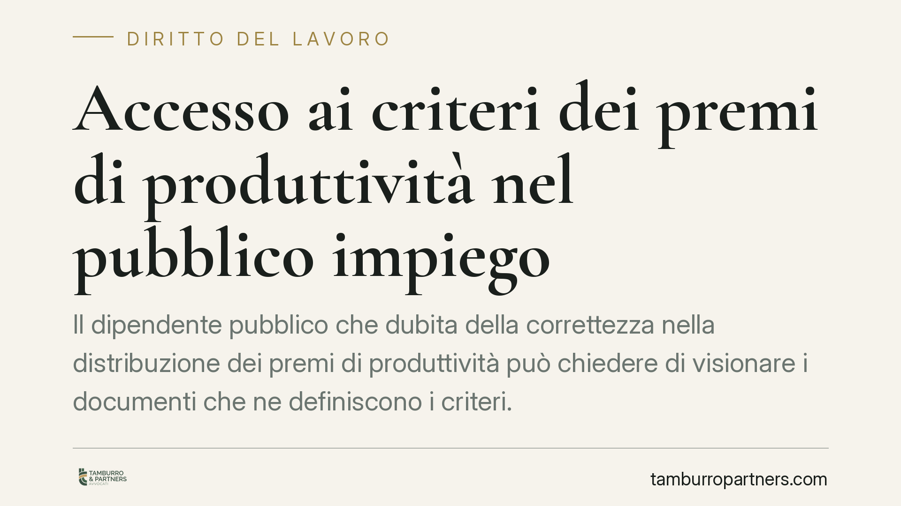

Accesso ai criteri dei premi di produttività nel pubblico impiego
Il dipendente pubblico che dubita della correttezza nella distribuzione dei premi di produttività può chiedere di visionare i documenti che ne definiscono i criteri. Una recente pronuncia del TAR Veneto lo conferma, imponendo però il bilanciamento con la riservatezza dei colleghi tramite l'oscuramento dei nominativi. Vediamo i presupposti e i limiti di questo diritto.

Il caso
Un dipendente pubblico chiede all'amministrazione di accedere agli atti che stabiliscono i criteri di attribuzione dei premi di produttività e alle relative graduatorie interne. L'obiettivo è verificare se la ripartizione delle somme incentivanti sia avvenuta secondo parametri corretti e coerenti con la contrattazione integrativa.
Secondo quanto riferito dalla fonte, il TAR Veneto (sede di Venezia) avrebbe riconosciuto il diritto di accesso, subordinandolo all'oscuramento dei dati identificativi dei colleghi. Precisiamo che gli estremi identificativi della sentenza (sezione, numero e anno) non risultano al momento verificabili: il principio esposto va quindi assunto come orientamento da riscontrare sulla pronuncia integrale, non come massima consolidata.
Inquadramento normativo
Occorre distinguere due strumenti diversi, spesso confusi.
Il primo è l'accesso documentale disciplinato dagli artt. 22-25 della legge n. 241/1990. Presuppone un interesse "diretto, concreto e attuale, corrispondente a una situazione giuridicamente tutelata" (art. 22, comma 1, lett. b). Non è quindi un diritto generalizzato: il richiedente deve dimostrare un collegamento specifico tra i documenti richiesti e una propria posizione da difendere. È lo strumento tipico del dipendente che voglia contestare la ripartizione degli incentivi che lo riguarda.
Il secondo è l'accesso civico generalizzato (il cosiddetto FOIA), introdotto dagli artt. 5 e 5-bis del D.Lgs. n. 33/2013. Non richiede la dimostrazione di un interesse qualificato ed è finalizzato al controllo diffuso sull'attività amministrativa. In materia di premi di produttività assume rilievo anche perché la trasparenza sui costi del personale e sulla contrattazione integrativa è oggetto di obblighi di pubblicazione.
Nel caso in esame l'interesse personale del dipendente rende naturale l'inquadramento nell'accesso documentale ex L. 241/1990.
Il bilanciamento con la riservatezza
Il punto più delicato è il rapporto tra il diritto di accesso e la tutela dei dati personali dei colleghi coinvolti nelle graduatorie. Il Regolamento (UE) 2016/679 (GDPR) impone che il trattamento dei dati sia adeguato, pertinente e limitato a quanto necessario rispetto alla finalità.
La soluzione applicata è l'ostensione dei documenti con oscuramento dei nominativi: il dipendente può conoscere i criteri, le percentuali e i meccanismi di distribuzione, senza risalire alle singole posizioni individuali dei terzi. È un'applicazione concreta del principio di proporzionalità.
Va richiamato anche l'orientamento del Consiglio di Stato in tema di accesso difensivo. Con la sentenza dell'Adunanza Plenaria n. 4 del 2021, il giudice amministrativo ha chiarito che l'accesso finalizzato alla cura o alla difesa di un interesse giuridico prevale sulla riservatezza dei terzi quando è necessario, ma va sempre effettuata una valutazione concreta e comparativa, escludendo un accesso "esplorativo" o meramente emulativo.
Implicazioni pratiche
Per il dipendente pubblico che sospetti irregolarità nella distribuzione degli incentivi, la conseguenza è netta: l'amministrazione non può opporre dinieghi non adeguatamente motivati né rifiutare l'accesso invocando genericamente la riservatezza dei terzi. Deve invece valutare la richiesta e, ove necessario, adottare misure meno invasive rispetto al rifiuto totale, come l'oscuramento dei dati identificativi.
Resta però fermo il limite dell'interesse diretto, concreto e attuale: la richiesta deve essere circostanziata e collegata a una posizione tutelabile, non a una generica curiosità.
Cosa fare in concreto
- Definisci l'interesse. Formula l'istanza indicando con precisione i documenti richiesti e il collegamento con la tua posizione (es. la contestazione della quota di incentivo attribuita).
- Scegli lo strumento corretto. Valuta se agire con l'accesso documentale ex L. 241/1990 o con l'accesso civico generalizzato ex D.Lgs. 33/2013, in base alla finalità.
- Presenta l'istanza per iscritto e conserva la prova dell'invio: sull'accesso documentale il silenzio dell'amministrazione protratto per trenta giorni equivale a rigetto (silenzio-diniego).
- Anticipa il tema privacy. Dichiara la disponibilità a ricevere gli atti con oscuramento dei nominativi, così da agevolare l'accoglimento.
- Reagisci ai dinieghi. In caso di rifiuto o silenzio, valuta il ricorso al TAR nei termini di legge o, in alternativa, il ricorso al difensore civico o al responsabile per la trasparenza.
Disclaimer
Contributo informativo a cura di Tamburro & Partners Avvocati - Avv. Giuseppe Tamburro. Non costituisce parere legale.
Ogni storia di lavoro ha i suoi tempi.
Se gestisci HR e vuoi un confronto su contenzioso, ispezioni o licenziamenti, scrivi allo studio. Ti rispondiamo entro un giorno lavorativo.